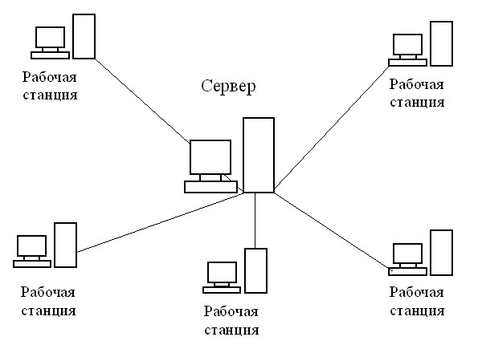

Звезда
При использовании топологии типа звезда информация между клиентами сети передается через единый центральный узел. В качестве центрального узла может выступать сервер или специальное устройство - концентратор (Hub).

Преимущества данной топологии состоят в следующем:
- Высокое быстродействие сети, так как общая производительность сети зависит только от производительности центрального узла.
- Отсутствие столкновения передаваемых данных, так как данные между рабочей станцией и сервером передаются по отдельному каналу, не затрагивая другие компьютеры.
Однако помимо достоинств у данной топологии есть и недостатки:
- Низкая надежность, так как надежность всей сети определяется надежностью центрального узла. Если центральный компьютер выйдет из строя, то работа всей сети прекратится.
- Высокие затраты на подключение компьютеров, так как к каждому новому абоненту необходимо ввести отдельную линию.